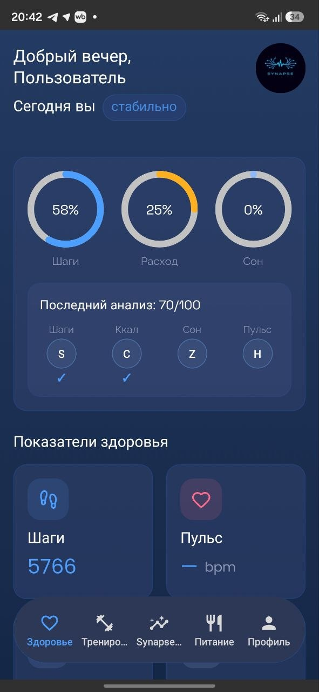
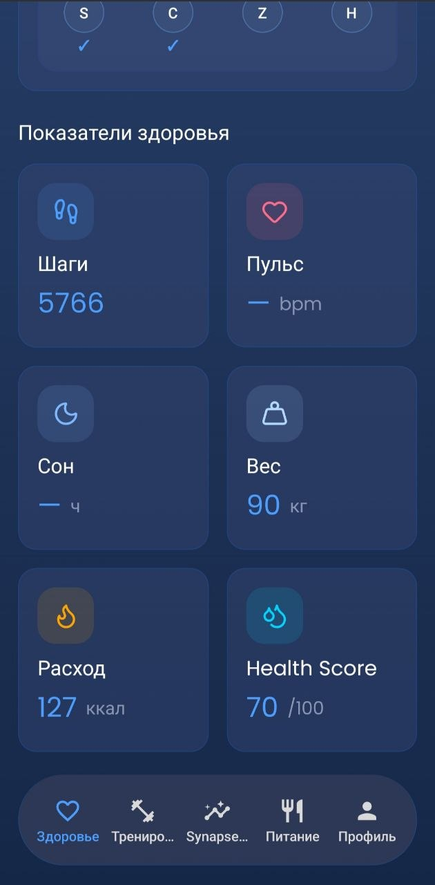
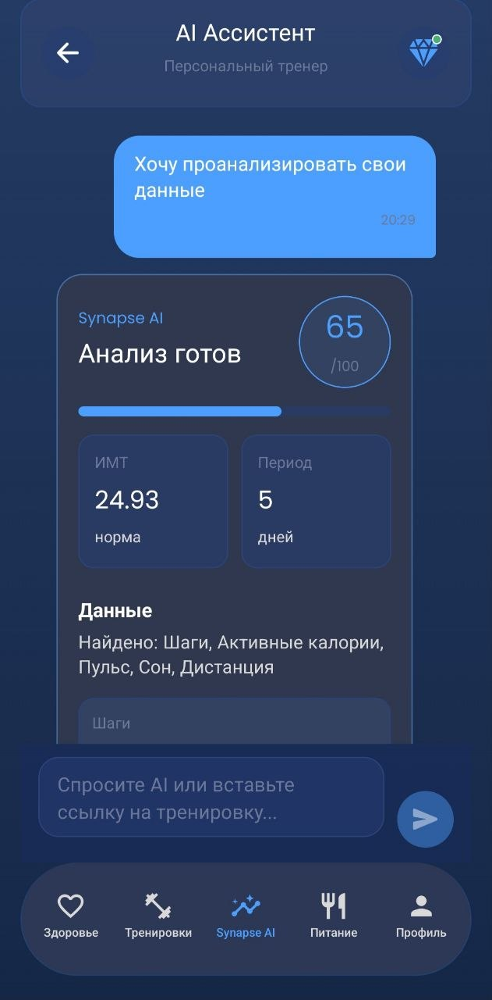

AI-ассистент для здоровья
Ваше здоровье
говорит цифрами.
Synapse превращает
их в решения.
Мобильное приложение анализирует показатели активности, объясняет главное и создает персональный план тренировок и питания.
01 единое приложение5 ключевых сценариев24/7 AI-контекст

✦
ОБЩЕЕ СОСТОЯНИЕ65 / 100Health Score
⌁
АКТИВНОСТЬ СЕГОДНЯ4 899 шагов49% цели · 79 ккал
02 · Проблема
Данные есть.
Понимания — нет.
Часы и приложения собирают десятки показателей. Но человеку по-прежнему непонятно: всё ли в порядке и что делать сегодня?
◉
ОБЩАЯ АКТИВНОСТЬ16%79 активных ккал✦SYNAPSEСВЯЗЫВАЕТ ДАННЫЕ
◇
СОСТОЯНИЕ ТЕЛА65 /100Health Score · нужен фокус☾
ВОССТАНОВЛЕНИЕ9,6 ч100% дневной цели сна✓
ЧТО ДАЕТ SYNAPSE
Не ещё один график, а понятный следующий шаг
Приложение объединяет данные, показывает общее состояние и переводит результат в тренировку, рацион или рекомендацию.
03 · Кто пользователь
Для людей, которые хотят
результат, а не цифры.
Synapse помогает и новичку, и активному пользователю — без необходимости разбираться в спортивной аналитике.
01
Начинаю
Новичок в фитнесе
Не знает, с чего начать, боится перегрузки и теряется среди противоречивых советов.
- Понятный первый план
- Безопасная сложность
- Объяснение каждого шага
02
Прогрессирую
Активный пользователь
Уже тренируется, но хочет видеть прогресс и вовремя адаптировать нагрузку.
- Анализ динамики
- Персональные корректировки
- История результатов
03
Экономлю время
Занятый человек
Хочет держать форму, но не готов собирать питание, тренировки и аналитику в разных сервисах.
- Всё в одном месте
- Решение на сегодня
- AI всегда под рукой
04 · Как работает решение
От данных — к действию
Три понятных шага вместо самостоятельной расшифровки десятков показателей.
↑
activity_export.zip5 дней активности
✓Добавьте данные
Заполните профиль и загрузите архив данных из фитнес-сервиса.
✦
AI анализируетМетрики · динамика · аномалии
65/100Получите разбор
Synapse рассчитывает Health Score, находит слабые места и объясняет результат.
✓
План на сегодня2 тренировки · 2 000 ккал · вода
→Действуйте по плану
Получите недельный план под цель похудения и отслеживайте прогресс.
Данные пользователя+Статистический анализ+AI-интерпретация=Персональное действие
05 · Живое демо продукта
Нажимайте прямо
на телефон
Это настоящие экраны beta-версии. Выберите раздел в навигации телефона и посмотрите, как работает продукт.
01 / 05
Здоровье в одном экране
Шаги, активные калории, сон и Health Score помогают быстро понять текущее состояние.
- Общая картина дня
- Результат последнего анализа
- Ключевые показатели здоровья
☝
Попробуйте самиНажмите на пункты меню внутри телефона

↕ Листайте экран
РЕАЛЬНОЕ ПРИЛОЖЕНИЕСкриншоты текущей beta-версии

AI объясняет результат
Пользователь получает Health Score 65/100, период анализа, BMI и информацию о полноте данных.
06 · Как устроен проект
Два слоя интеллекта.
Один понятный результат.
Численные алгоритмы отвечают за расчеты, AI — за персональную интерпретацию.
✦SYNAPSEAI ENGINE
ДАННЫЕ
AI-АНАЛИЗ
ДЕЙСТВИЕ
React Native + Expo
Единая кодовая база, TypeScript, Expo Router и Zustand.
CLIENTPython + FastAPI
API для анализа, рекомендаций, питания, чата и аккаунтов.
BACKENDPandas + NumPy
Расчет метрик, качества данных и поиск необычных значений.
DATADeepSeek + PostgreSQL
Структурированные JSON-ответы, история анализов и профили.
AI · DATABASE＋
Безопасный wellness-подход Synapse не ставит диагнозы. Рекомендации носят информационный характер, а при медицинских вопросах приложение направляет к специалисту.
07 · Бизнес-модель
Легко попробовать.
Есть зачем остаться.
Freemium снижает барьер входа, Premium монетизирует регулярную ценность персонального AI.
FREEMIUM0 ₽навсегда
Для первого знакомства и формирования привычки.
- Базовый трекингДневник тренировок, подходы, веса и повторения
- 3–5 AI-запросов в месяцБазовый план и вопросы с ограниченным контекстом
- История за 14 днейОсновные показатели и графики прогресса
ОСНОВНОЙ ТАРИФ
✦ SYNAPSE PREMIUM499 ₽/ месяц
Для тех, кому нужен полноценный умный тренер.
- Безлимитный AI-ассистентПланы и ответы с полным контекстом пользователя
- Глубокий AI-анализПрогресс, нагрузка и персональные корректировки
- Полная история и импортыВсе анализы, продвинутые графики и загрузка архивов
- Приоритетная генерацияБыстрый отклик и приоритетная очередь
Бесплатный вход→Первый AI-результат→Ежедневная привычка→Premium 499 ₽
08 · Тестирование и фидбэк
Пользователи попросили.
Мы реализовали.
Последний раунд тестирования помог улучшить вход, регистрацию, навигацию, показатели здоровья и профиль.
«Хочу добавлять свои тренировки»✓ ГОТОВО
Конструктор тренировок
Пользователь создает собственную тренировку, добавляет ее в план и отмечает выполнение.
«Нужно записывать свою еду»✓ ГОТОВО
Дневник питания
Добавление приемов пищи с автоматическим пересчетом калорий и БЖУ.
«Хочу спросить AI о чем угодно»✓ ГОТОВО
Свободный AI-чат
Ассистент отвечает с учетом профиля, цели похудения и результатов последнего анализа за 5 дней.
NEW
После последнего тестирования
Красивое оформление сохранили, а замечания пользователей превратили в готовые улучшения.
Поле входа стало понятнее, а авторизация теперь работает и по привязанному номеру.
Добавили оценку надежности, подсказки и автоматическую генерацию сильного пароля.
Добавили подтверждение почты или номера и убрали ложное сообщение о повторной регистрации.
Исправили обрезанные и перечеркнутые подписи в нижнем путеводителе приложения.
Объяснили проценты, «Расход» заменили на «Активные калории», а Health Score — на «Оценку здоровья».
Маска номера больше не добавляет лишний ноль сразу после знака «+».
09 · Что дальше
Следующая версия
станет ещё ближе к пользователю.
Roadmap развивает персонализацию, непрерывность данных и удобство прямо во время тренировки.
⌂
Дом · Зал · Улица
Автоматическая адаптация программы под локацию и доступный инвентарь.
ПЕРСОНАЛИЗАЦИЯ◌
История AI-диалогов
Возврат к прошлым планам, советам по питанию и технике.
КОНТЕКСТ◎
Профиль и аватары
Упрощенный редактор и динамика антропометрии.
ПРОФИЛЬ☁
Синхронизация
Облачные бэкапы и сохранение истории при смене устройства.
НАДЕЖНОСТЬ♥
HealthKit и Google Fit
Автоматический импорт шагов, пульса и калорий для точного анализа.
ИНТЕГРАЦИИ◉
Голосовой ввод
Диктовка весов и повторений без отвлечения от тренировки.
СКОРОСТЬS
Synapse AI · Beta
Ваши данные уже готовы
работать на вас.
Synapse превращает показатели в ясность, а ясность — в ежедневное действие.